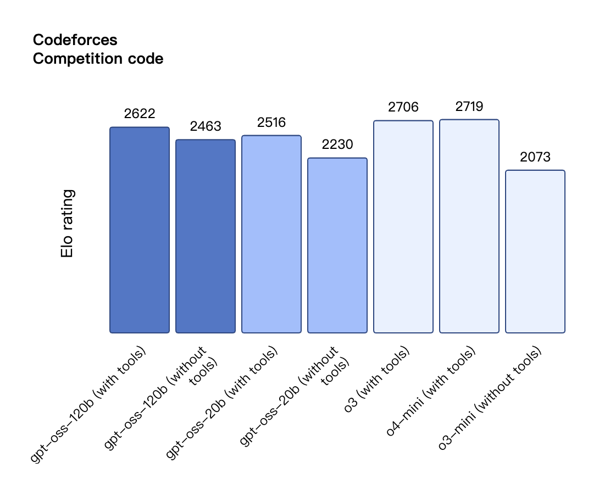
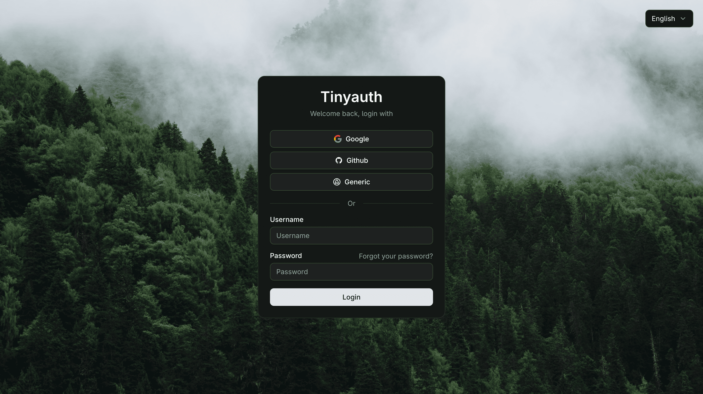
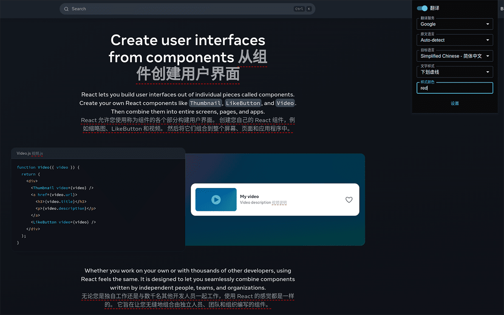
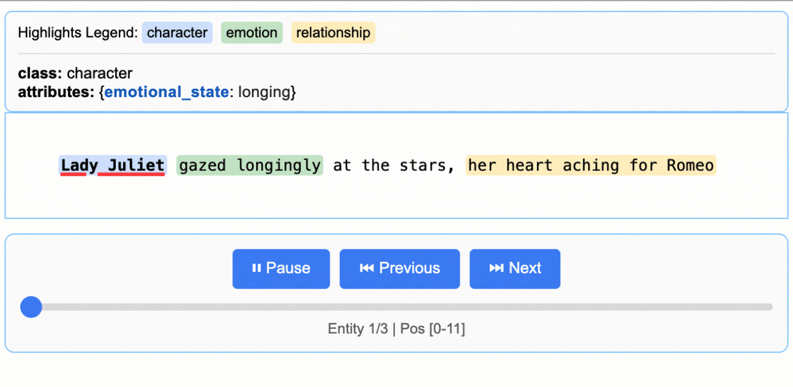
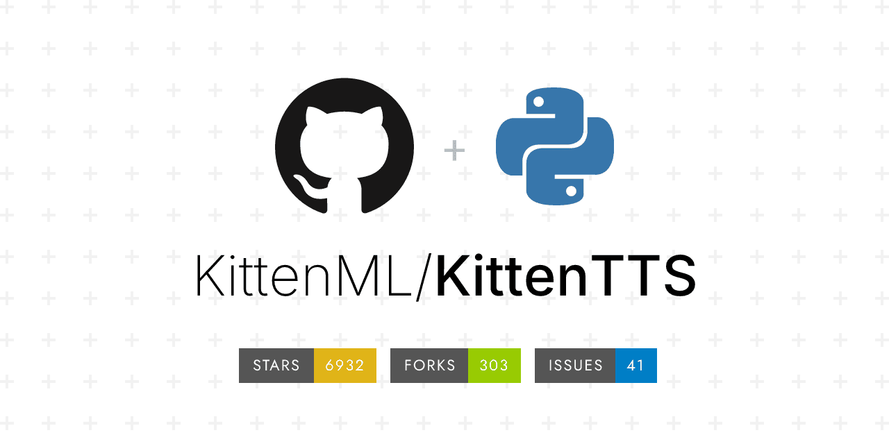
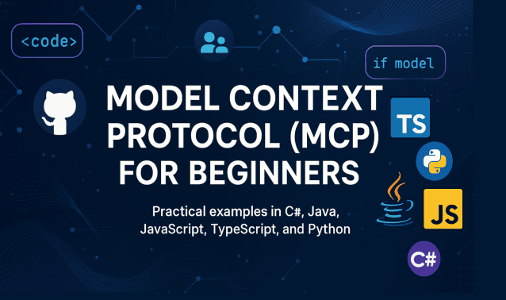
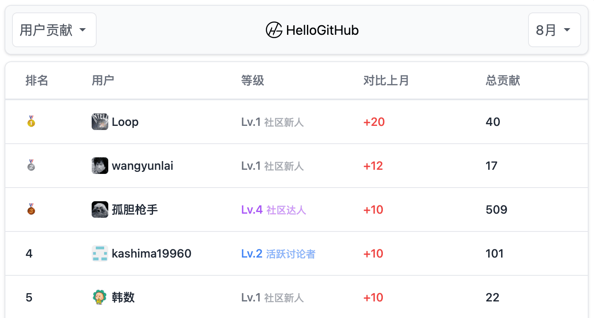
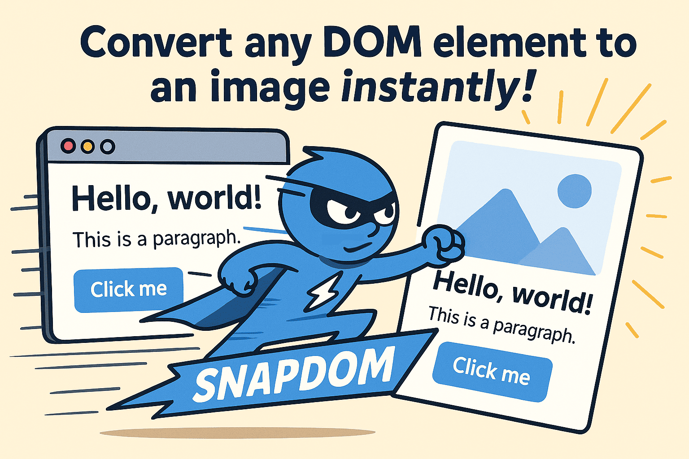
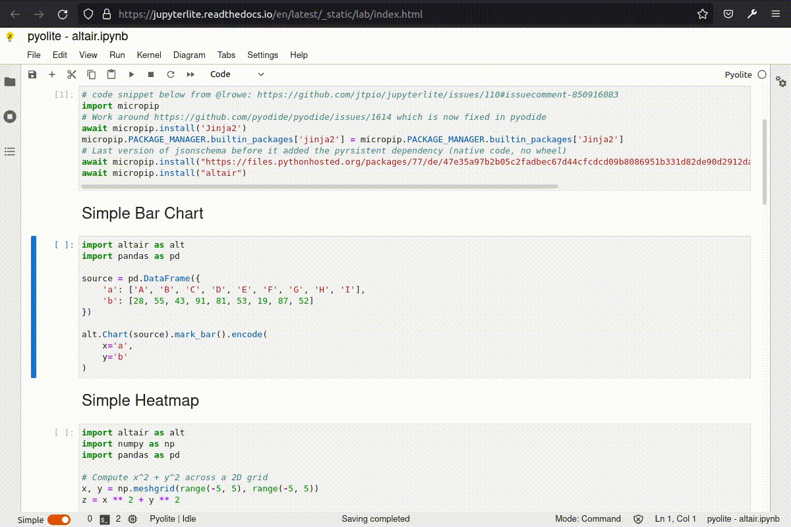

上周，最大的开源新闻就是 OpenAI 开源了 gpt-oss 推理模型。尽管模型能力不俗，但似乎并未带来“颠覆性”突破，也许是我们对大模型开源已经有些“审美疲劳”了。

说回本周的热门开源项目，KittenTTS 是一款小巧却高质量的英文文本转语音模型，凭借自然流畅的语音效果，一周内收获了 6k Star。谷歌开源的 LangExtract 则利用大模型，通过简短提示和少量示例，能从非结构化文本中高效提取结构化信息。此外，微软开源的 MCP 教程，系统地帮助开发者掌握 MCP 原理与最佳实践。还有无需编写代码、可一键集成登录界面的身份认证中间件 Tinyauth。
最后，精准的网页内容截图库 snapdom 和开源的网页双语对照翻译浏览器插件，也是不错的开源项目。
· 本文目录
· 1\. 热门开源项目
· 1.1 开源的零代码身份认证中间件：Tinyauth
· 1.2 开源的网页双语对照翻译工具：kiss-translator
· 1.3 基于大模型的智能文本提取库：LangExtract
· 1.4 轻量小巧的文本转语音模型：KittenTTS
· 1.5 微软开源的 MCP 教程：mcp-for-beginners
· 2\. HelloGitHub 热评
· 2.1 精准的网页内容截图库：snapdom
· 2.2 在浏览器中运行的 JupyterLab：JupyterLite
· 3\. 结尾
1. 热门开源项目
1.1 开源的零代码身份认证中间件：Tinyauth

主语言：Go，Star：4.4k，周增长：700
这是一个 Go 语言开发的极简认证中间件，可通过 Docker 快速部署。它能为任何 Web 应用或服务一键添加登录界面或 OAuth 登录（Google、GitHub 等），无需修改现有代码，可无缝集成到 Traefik、Caddy、Nginx 等主流反向代理，极大简化了安全登录的实现流程。
GitHub 地址→github.com/steveiliop56/tinyauth
1.2 开源的网页双语对照翻译工具：kiss-translator

主语言：JavaScript，Star：6.3k，周增长：2.2k
这是一款开源的双语对照翻译浏览器插件。它为用户提供网页内容的快速双语对照翻译功能，便于在阅读外语网页时同步查看原文与译文，支持多翻译引擎（Google、DeepL、OpenAI 等）一键切换，且全部在本地调用 API，不经过第三方服务器、保护隐私。
GitHub 地址→github.com/fishjar/kiss-translator
1.3 基于大模型的智能文本提取库：LangExtract

主语言：Python，Star：8.1k，周增长：4k
这是一款由 Google 开源的 Python 库，可实现自动识别和提取文本内容。它内置源文本的精确定位与交互式可视化功能。用户只需提供简短提示和少量示例，便可借助大型语言模型（如 Gemini）从非结构化文本中高效、精准地提取结构化信息。
import langextract as lx
import textwrap
# 1. Define the prompt and extraction rules
prompt = textwrap.dedent("""\
Extract characters, emotions, and relationships in order of appearance.
Use exact text for extractions. Do not paraphrase or overlap entities.
Provide meaningful attributes for each entity to add context.""")
# 2. Provide a high-quality example to guide the model
examples = [
lx.data.ExampleData(
text="ROMEO. But soft! What light through yonder window breaks? It is the east, and Juliet is the sun.",
extractions=[
lx.data.Extraction(
extraction_class="character",
extraction_text="ROMEO",
attributes={"emotional_state": "wonder"}
),
lx.data.Extraction(
extraction_class="emotion",
extraction_text="But soft!",
attributes={"feeling": "gentle awe"}
),
lx.data.Extraction(
extraction_class="relationship",
extraction_text="Juliet is the sun",
attributes={"type": "metaphor"}
),
]
)
]
GitHub 地址→github.com/google/langextract
1.4 轻量小巧的文本转语音模型：KittenTTS

主语言：Python，Star 6.8k，周增长：6k
这是一款轻量级文本转语音（TTS）模型，体积小于 25MB、无需 GPU 即可流畅运行。它能够将文本高质量地转换为自然流畅的语音，支持多种音色，适用于多种设备和场景。
GitHub 地址→github.com/KittenML/KittenTTS
1.5 微软开源的 MCP 教程：mcp-for-beginners

主语言：Other，Star 8.6k，周增长：600
该项目是微软开源的 MCP 基础教程，内容围绕 Python、.NET、Java、TypeScript 等多种编程语言，通过丰富的代码实例与系统化的学习路径，帮助开发者掌握 MCP 原理与最佳实践。
GitHub 地址→github.com/microsoft/mcp-for-beginners
2. HelloGitHub 热评
在此章节中，我们将为大家介绍本周 HelloGitHub 网站上的热门开源项目，我们不仅希望您能从中收获开源神器和编程知识，更渴望“听”到您的声音。欢迎您与我们分享使用这些开源项目的亲身体验和评价，用最真实反馈为开源项目的作者注入动力。

2.1 精准的网页内容截图库：snapdom

主语言：JavaScript
这是一个高效的网页截图 JavaScript 库，可将网页上的任意 Dom 元素快速、精确地转化为高质量图片，并支持导出为 PNG、JPG、WebP 或 Canvas 格式，适用于网页自动化测试、生成预览图、内容保存等场景。
项目详情→hellogithub.com/repository/zumerlab/snapdom
2.2 在浏览器中运行的 JupyterLab：JupyterLite

主语言：TypeScript
这是一个完全在浏览器中运行的 JupyterLab，无需安装 Python 或配置服务器。它提供在线交互式 Python 编程环境，可作为静态文件部署到任何静态网站托管平台（如 GitHub Pages）。
项目详情→hellogithub.com/repository/jupyterlite/jupyterlite
3. 结尾
以上就是本期「GitHub 热点速览」的全部内容，希望这些开源项目能激发你的兴趣，帮助你找到下一个想要尝试的工具！如果你也发现了好玩、有趣的 GitHub 开源项目想要分享，欢迎来 HelloGitHub 与我们交流心得、讨论使用体验。
往期回顾
· 仅一个 Python 文件，狂揽近 2 万 Star
· 一周 Star 破万的开源项目